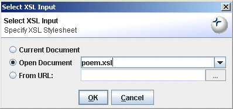
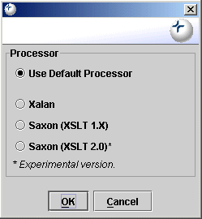
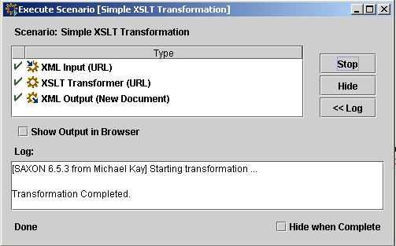
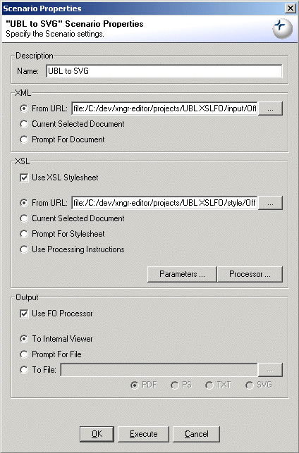
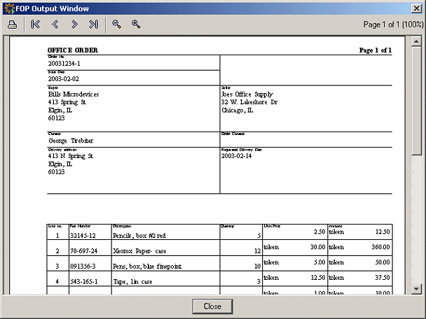
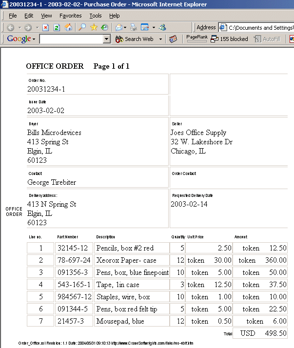
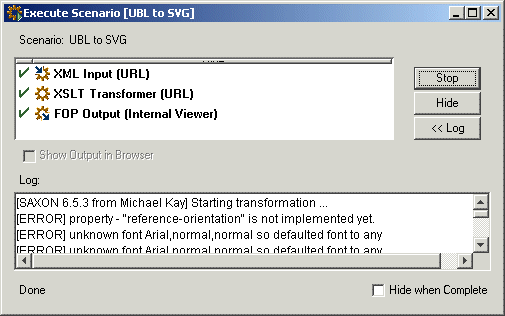

Use the menu item Transform->Execute Simple XSLT to when you want to perform an XSLT transformation but aren't worried about setting input parameters or output file specifications. Simply choose the input file, stylesheet and processor and the output of the transformation will be displayed in a new window in the editor.

Figure 1. Execute Simple XSLT - XML file
When setting the input file for the transformation, you can choose between the current file (if it is XML), or any files that are open in the editor, or any arbitrary file.
Figure 2. Execute Simple XSLT - XSLT file
When setting the stylesheet file for the transformation, you can choose between the current file (if it is an XSL stylesheet), or any files that are open in the editor, or any arbitrary file.
Figure 3. Execute Simple XSLT - Processor
You can also explicitly set the XSLT processor to use, or use the default processor as specified in the Preferences.
Figure 4. Execute Simple XSLT - Status
The status of the transformation is displayed in a dialog, along with any messages that may have been generated. The generated output is automatically opened in a new window in the Editor. If you want to control the output destination, use the Execute Advanced XSLT function or create a Scenario.
To rerun a simple XSLT transformation without rekeying the settings, select Transform->Execute Previous->Execute Previous XSLT. For even quicker access, create a keyboard shortcut for this action in the Keys tab in the File->Preferences dialog.
Use the menu item Transform->Execute Advanced XSLT when you want to perform an XSLT transformation and need to set input parameters and control the output destination.

Figure 5. Execute Advanced XSLT
The input file can be chosen from the currently open document, any other open document or any arbitrary file. Alternatively, the input file can be chosen at execution time by selecting Prompt for Document in the XML section of the dialog.
The stylesheet can be chosen from the currently open document, any other open document or any arbitrary file. Alternatively, a Processing Instruction in the input file can be used to specify the stylesheet, or it can be chosen at execution time by selecting Prompt for Stylesheet in the XSL section of the dialog.
To explicitly set the XSLT processor for the transformation, press the Processor... button in the XSL section of the dialog otherwise the default processor as specified in the Preferences will be used.
To set input parameters for the transformation, press the Parameters... button in the XSL section of the dialog.

Figure 6. Execute Advanced XSLT - Setting Input Parameters
The output can be automatically opened in the editor or redirected to file. It can also be used to replace the current input file, for example, when a transformation reformats the input file. The transformation output can also be automatically opened in a browser window, irrespective of which output option has been taken.
When the input, style and output setting have been completed, press the Execute button to run the transformation. The status of the transformation execution is displayed in a dialog, along with any messages that may have been generated. It is possible to set a preference to immediately dismiss the dialog at the end of processing on the Views tab in the File->Preferences dialog.
To rerun an advanced XSLT transformation without rekeying the settings, select Transform->Execute Previous->Execute Previous XSLT. For even quicker access, create a keyboard shortcut for this action in the Keys tab in the File->Preferences dialog.
If the active document is an XSLFO file, Transform->Execute FO will prompt for an input XML file. If the active document is an XML file, then Transform->Execute FO will prompt for an XSLFO file. The output of the transformation can be sent to a built-in (SVG) viewer or saved to file in a number of different formats including PDF, PostScript, Text and SVG.
To rerun an XSLFO transformation without rekeying the settings, select Transform->Execute Previous->Execute Previous FO. For even quicker access, create a keyboard shortcut for this action in the Keys tab in the File->Preferences dialog.
To support the use of TIFF and PNG files in XSLFO transformations, you will need to download the relevant libraries from Sun. (See http://java.sun.com/products/jimi/ and http://java.sun.com/products/java-media/jai/. Use the System tab in the File->Preferences dialog to add the Jars and Zips to Exchanger and install any required native libraries.
It is possible to manage XSLT and XSLFO transformations from within Exchanger. Scenarios allow the user to easily perform complex transformations including choosing the XSLT processor, setting input parameters and specifying XSLFO output. Scenarios can also be used to store information including breakpoints between debugging sessions.
Open the project UBL XSLFO and in the folder named input open the file OfficeOrder.xml. Select Transform->Manage Scenarios, click the Import button and choose the file projects/UBL XSLFO/scenario/UBL to SVG.scenario to import a new transformation scenario. To view the details of the imported scenario, highlight it in the Manage Scenarios list and click Edit (or alternatively just double-click it in the list).
Figure 7. Scenario Properties
To test the transformation, select Transform->Execute Scenario (or press the Execute Scenario button ) and choose the this scenario from the list. The result - an SVG rendition of the input purchase order OfficeOrder.xml - should be displayed in a popup window. Close the popup window when finished.
Figure 8. UBL SVG
If you would like to view the input UBL document as HTML, import the scenario UBL to FO and the scenario FO to HTML and execute each one in turn.
Figure 9. UBL HTML
The Scenario Execution Dialog displays information about the progress of transformations and scenarios and also provide a mechanism for halting long-runing processes. It is possible to set a preference to immediately dismiss the dialog at the end of processing on the Views tab in the File->Preferences dialog.
Figure 10. Scenario Execution Dialog
It is also possible to create a scenario by hand. Select Transform->Manage Scenarios and click New to create a new transformation scenario.
In the Scenario Properties dialog, enter a scenario Name, for example, as "UBL to PDF" and set the XML From URL to projects/UBL XSLFO/input/OfficeOrder.xml Choose Use XSL Stylesheet and set the XSL Location as projects/UBL XSLFO/style/OfficeOrder.xsl
In the Output section of the Scenario Properties dialog, click the "Use FO Processor" tick box and choose output To File in projects/UBL XSLFO/output/OfficeOrder.pdf and set the format to PDF.
Click on OK at the bottom of the Scenario Properties dialog to save this scenario. To test the transformation, select Transform->Execute Scenario and choose the desired scenario from the list. The result - a PDF rendition of the input purchase order OfficeOrder.xml will be created in the output location.
To modify or delete scenarios, click on Transform->Manage Scenarios and choose the desired scenario from the list. Scenarios can also be exported for sharing using the Export button on the Manage Scenarios dialog.
Three macros are supported to improve the reusability of transformations and scenarios. ${file} substitutes the input filename, {$ext} is the input file extension and ${path} is the file path of the input file. For example, if the input file is c:/doc/test.htm then ${path} is c:/doc while ${file} is test and ${ext} is .htm. Use the macros to control the output destination of a transformation scenario.